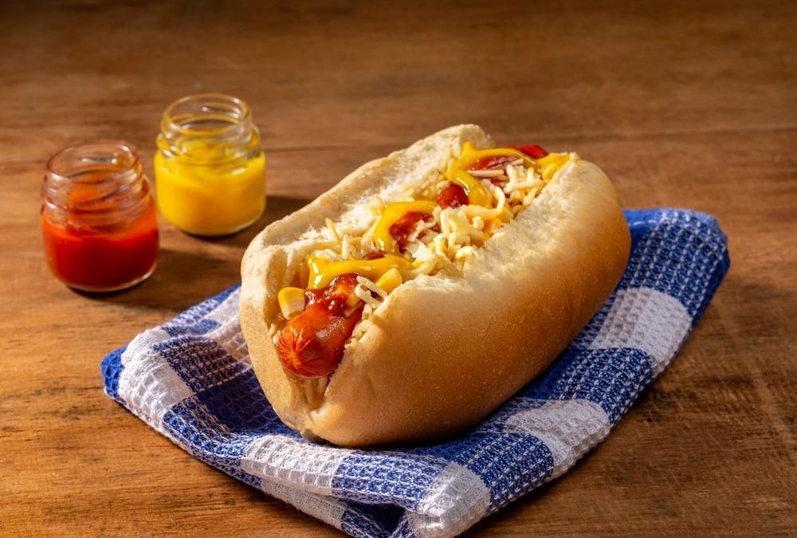

Veja mais Lanches

Cachorro quente

Bauru de Forno

 Ta fácil
Ta fácil
Apresentamos o Lanche Bauru Tradicional, uma verdadeira iguaria da culinária brasileira que conquistou corações ao redor do país. Imagine saborear uma combinação perfeita de ingredientes frescos e suculentos, todos cuidadosamente selecionados para criar uma experiência gastronômica única.
O bauru original. Casimiro, que era estudante de Direito e frequentava o tradicional bar Ponto Chic, em uma noite do ano de 1937, resolveu criar um prato novo após ler o livreto Livro das Mamãezinhas, escrito por Wladimir de Toledo Piza. Com as dicas do livreto, orientou o chapeiro do local a produzir o sanduíche.